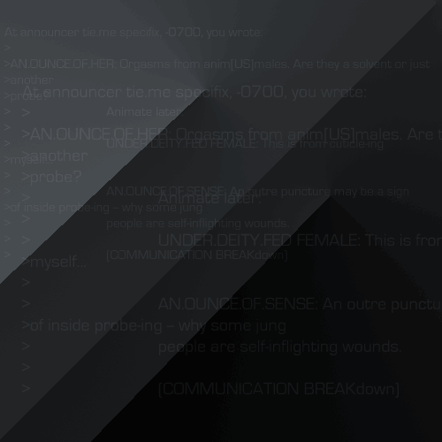

|

from:
mez
date:
Thu, 4 Jun 1998 04:45:15 +0200
At announcer tie.me specifix, -0700, you wrote:
>
>AN.OUNCE.OF.HER: Orgasms from anim[US]males.
>Are they a solvent or just
>another
>probe?
> Animate later:
>
>UNDER.DEITY.FED FEMALE: This is from cuticle-ing
>myself...
>
>AN.OUNCE.OF.SENSE: An outre puncture may be a sign
>of inside probe-ing -- why some jung
>people are self-inflighting wounds.
>
>(COMMUNICATION BREAKdown)
|